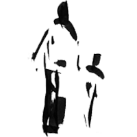
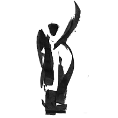

Entre janvier 2024 et janvier 2030, un réseau de collaborations scientifiques prend forme dans l'Est-du-Québec. Des mandataires, bénéficiaires, collaborateurs et scientifiques tissent des liens d'affaires autour d'un projet structurant commun.
Between January 2024 and January 2030, a network of scientific collaborations takes shape in Eastern Québec. Mandataries, beneficiaries, collaborators and scientists weave business relationships around a shared structuring project.
Cette visualisation retrace l'émergence de ces liens au fil du temps : qui collabore avec qui, quand et pour quels types de services.
This visualization traces the emergence of these relationships over time: who collaborates with whom, when, and for what types of services.
Réseau de collaborations · Est-du-Québec Collaboration network · Eastern Québec

Ce projet est le fruit d'une collaboration entre plus de 500 participant·e·s scientifiques réparti·e·s dans quatre universités canadiennes. Nos remerciements vont à l'ensemble des MRC de l'Est-du-Québec et à leurs équipes pour leur engagement et leur confiance.
This project is the result of a collaboration between more than 500 scientific participants spread across four Canadian universities. Our thanks go to all the MRCs of Eastern Québec and their teams for their commitment and trust.
Hommage aux membres de communautés, chercheur·euses et citoyen·nes qui œuvrent à enrichir les connaissances et à habiter le territoire avec sens.
Tribute to community members, researchers and citizens who work to enrich knowledge and inhabit the territory with meaning.